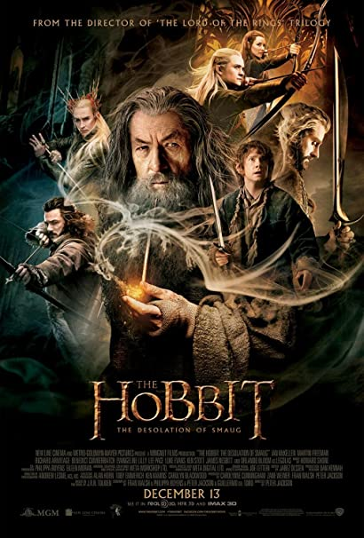

EL HOBBIT

El hobbit (título original en inglés: The Hobbit, or There and Back Again, usualmente abreviado como The Hobbit) es una novela fantástica del filólogo y escritor británico J. R. R. Tolkien. Fue escrita por partes desde finales de los años 1920 hasta principios de los años 1930 y, en un principio, tan solo tenía el objetivo de divertir a los hijos pequeños de Tolkien. No obstante, el escritor prestó a varias personas el manuscrito de la obra aún inacabada, que terminó en manos de la editorial George Allen y Unwin. Dispuestos a publicarla, los editores pidieron a Tolkien que finalizara la obra y El hobbit fue publicada el 21 de septiembre de 1937 en el Reino Unido.
Es la primera obra que explora el universo mitológico creado por Tolkien y que más tarde se encargarían de definir El Señor de los Anillos y El Silmarillion. Dentro de dicha ficción, el argumento de El hobbit se sitúa en el año 2941 de la Tercera Edad del Sol, y narra la historia del hobbit Bilbo Bolsón, que junto con el mago Gandalf y un grupo de enanos, vive una aventura en busca del tesoro custodiado por el dragón Smaug en la Montaña Solitaria.
Debido al éxito que tuvo y a las buenas críticas que recibió, los editores pidieron a Tolkien una continuación. Bautizada como El Señor de los Anillos, su cambio a un tono alejado del infantil provocó que El hobbit tuviera que ser modificado ligeramente para que ambas historias coincidieran mejor.
Tras la publicación en 1964 de la edición argentina titulada El hobito, Ediciones Minotauro compró los derechos de las obras de Tolkien y publicó una traducción mejorada de la novela en España en 1982 y en Argentina en 1984.
La BBC Radio 4 realizó una adaptación radiofónica de El hobbit en 1968, mientras que Arthur Rankin Jr. y Jules Bass produjeron una película sobre ella para la televisión. En la actualidad ha finalizado la producción de una trilogía basada en El Señor de los Anillos producida por el director Peter Jackson. A pesar de haberse involucrado por más de dos años en el diseño y producción de las adaptaciones al cine, el 31 de mayo de 2010, el mexicano Guillermo del Toro renunció a la dirección de las cintas debido al retraso en el comienzo de la filmación por los problemas financieros que atraviesa la productora Metro-Goldwyn-Mayer. En diciembre de 2012 se estrenó la primera parte, Un viaje inesperado, en 2013 se estrenó La desolación de Smaug, mientras que el estreno de la última película, La batalla de los Cinco Ejércitos, se realizó en diciembre de 2014.También se han creado varios videojuegos basados en la novela.